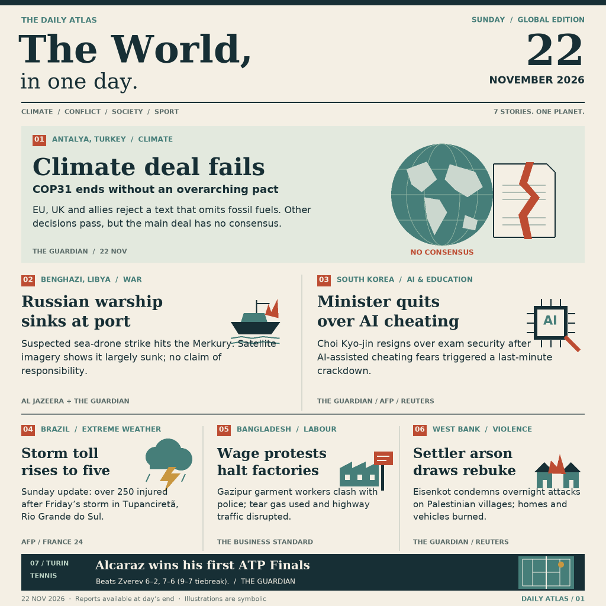

<!doctype html>
<!-- SPDX-License-Identifier: MIT -->
<html lang="en">
<meta charset="utf-8">
<meta name="viewport" content="width=device-width, initial-scale=1">
<title>The Daily Atlas — 22 November 2026</title>
<style>
  :root { color-scheme: light; background: #172f35; color: #f4efe4; }
  * { box-sizing: border-box; }
  body { margin: 0; font: 15px/1.6 system-ui, sans-serif; }
  header, footer { max-width: 1056px; margin: auto; padding: 16px; }
  header { display: flex; align-items: center; justify-content: space-between; gap: 12px; }
  header strong { letter-spacing: .12em; font-size: 13px; }
  a { color: #c7e6d7; text-underline-offset: 4px; }
  figure { margin: 0 auto; max-width: 1024px; }
  img { width: 100%; height: auto; display: block; background: #f4efe4; }
  footer { color: #c5d2cb; }
  footer p { margin: 4px 0; }
  @media (max-width: 600px) { header { font-size: 12px; } }
</style>
<header>
  <strong>THE DAILY ATLAS</strong>
  <a href="entry.png" download>Download full-resolution image</a>
</header>
<figure>
  
</figure>
<footer>
  <p>Seven reports. One day. Original symbolic illustrations, not photographs.</p>
  <p><a href="SOURCES.md">Reporting and editorial notes</a> · <a href="https://github.com/victory-c/makefun-news-image-1122">Source code (MIT)</a></p>
</footer>
</html>
